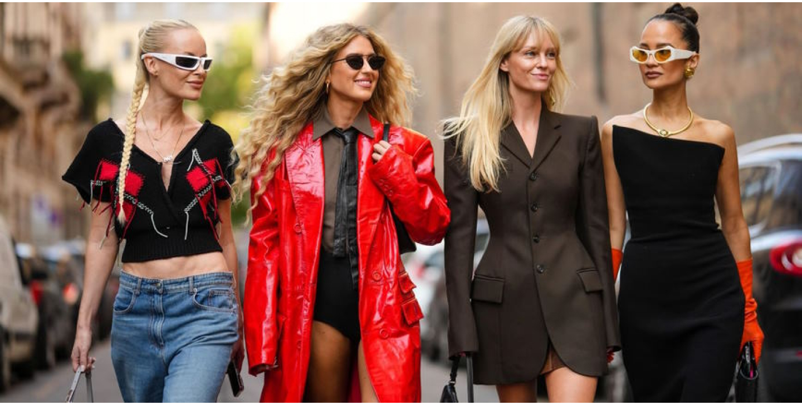

Revamping your wardrobe doesn't always require a trip to the mall.
With a bit of creativity and some simple DIY techniques, you can breathe new life into old clothes and transform them into stylish and on-trend outfits. In this article, we'll explore some fun and easy fashion hacks to help you upcycle your wardrobe and create unique pieces that reflect your personal style.
- 1. Distressed Denim: Give old jeans a trendy makeover by distressing them yourself. Use scissors, sandpaper, or a cheese grater to create rips, tears, and frayed edges for that coveted worn-in look. For an extra touch of style, add embellishments like studs, patches, or embroidery to customize your denim and make it truly one-of-a-kind.
- 2. Tie-Dye Revival: Tie-dye is back in a big way, and you can easily jump on this trend by transforming plain t-shirts, hoodies, or even socks into vibrant and colorful creations. Experiment with different dye colors, patterns, and techniques like spiral, crumple, or dip-dye to create unique tie-dye designs that reflect your personality and style.
- 3. Crop it Like it's Hot: Crop tops are a summer staple, and you can create your own custom crop tops from old t-shirts, sweaters, or button-up shirts. Simply cut the hem to your desired length and style, and you've got a trendy new piece that's perfect for pairing with high-waisted jeans, skirts, or shorts.
- 4. Embellished Accessories: Add flair to plain accessories like hats, bags, or shoes by embellishing them with beads, sequins, patches, or fabric paint. Get creative and experiment with different designs and motifs to add a personal touch to your accessories and elevate your outfit.
- 5. Patchwork Perfection: Patchwork is a fun and playful trend that's easy to DIY at home. Raid your fabric stash or old clothing for scraps of fabric in different colors, patterns, and textures, then piece them together to create a patchwork masterpiece. Use fabric glue or a sewing machine to attach the patches to a denim jacket, skirt, or pair of jeans for a whimsical and bohemian-inspired look.
- 6. Statement Sleeves: Transform basic tops or dresses into fashion-forward statement pieces by adding dramatic sleeves. Experiment with ruffles, flounces, or bell sleeves to give your old clothes a trendy update that's sure to turn heads.
- 7. Revamp with Ribbons: Add a touch of elegance to plain garments by embellishing them with ribbons or trimmings. Use ribbon to create bows, straps, or decorative accents on blouses, skirts, or dresses for a chic and feminine look.
- 8. Customized Denim Jackets: Personalize a denim jacket with patches, embroidery, or paint to create a unique piece that reflects your style and interests. Add patches of your favorite bands, quotes, or symbols, or get artistic with hand-painted designs for a jacket that's as cool and individual as you are.
With these DIY fashion hacks, you can breathe new life into old clothes and unleash your creativity to create stylish and on-trend outfits that are uniquely yours. So raid your closet, grab your crafting supplies, and get ready to transform your wardrobe into a fashion playground!